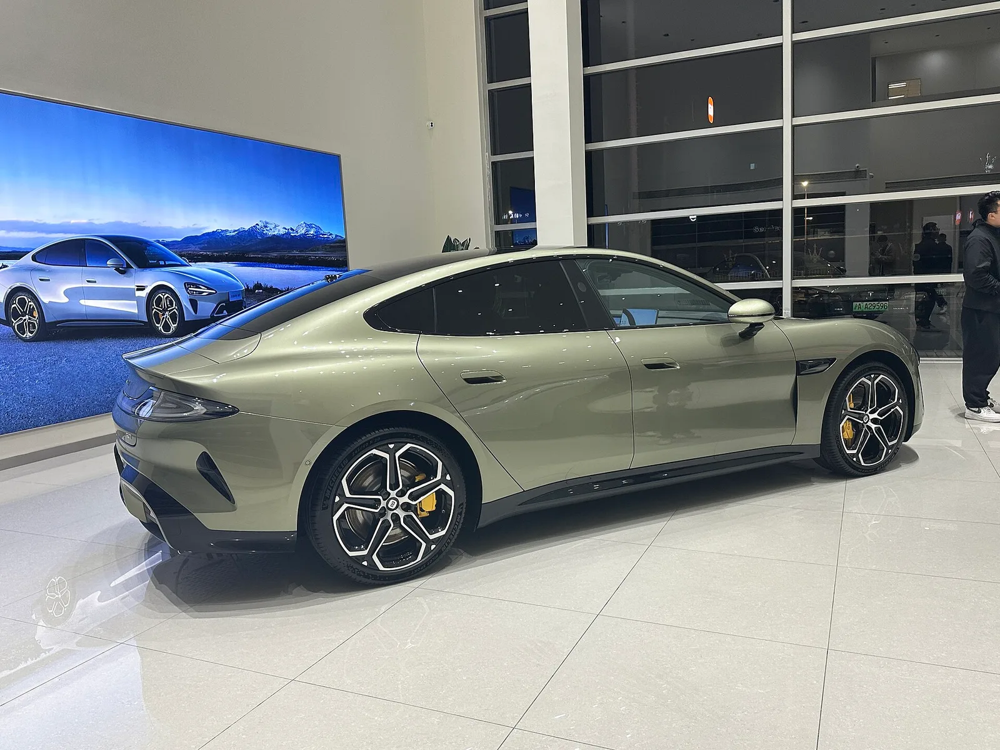
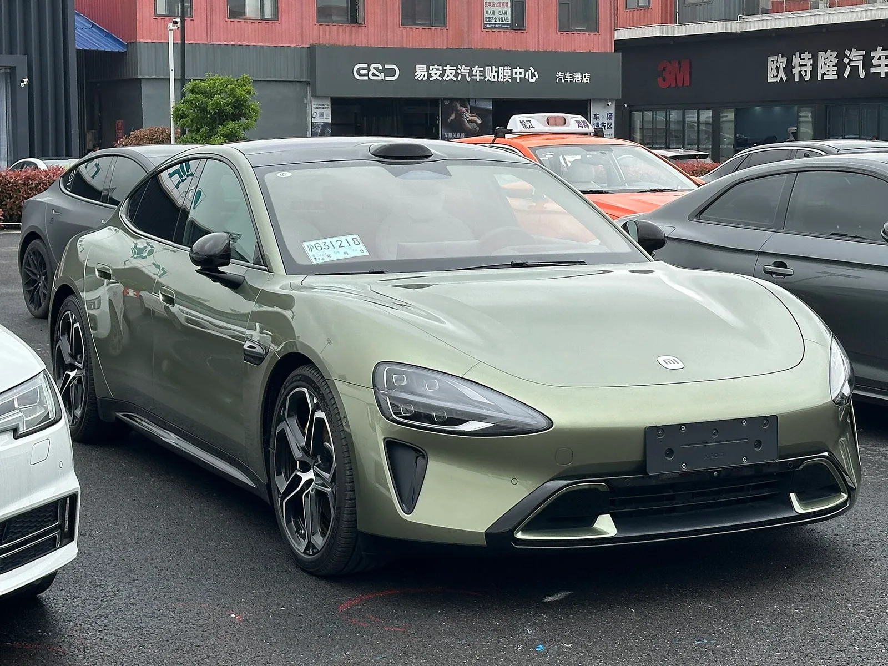
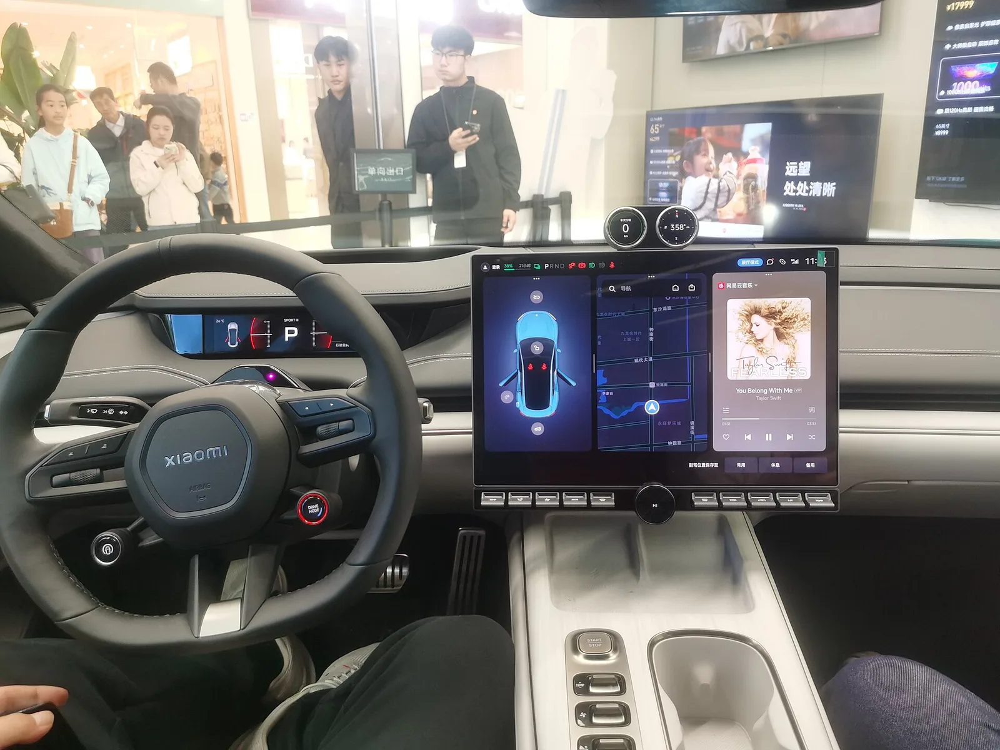
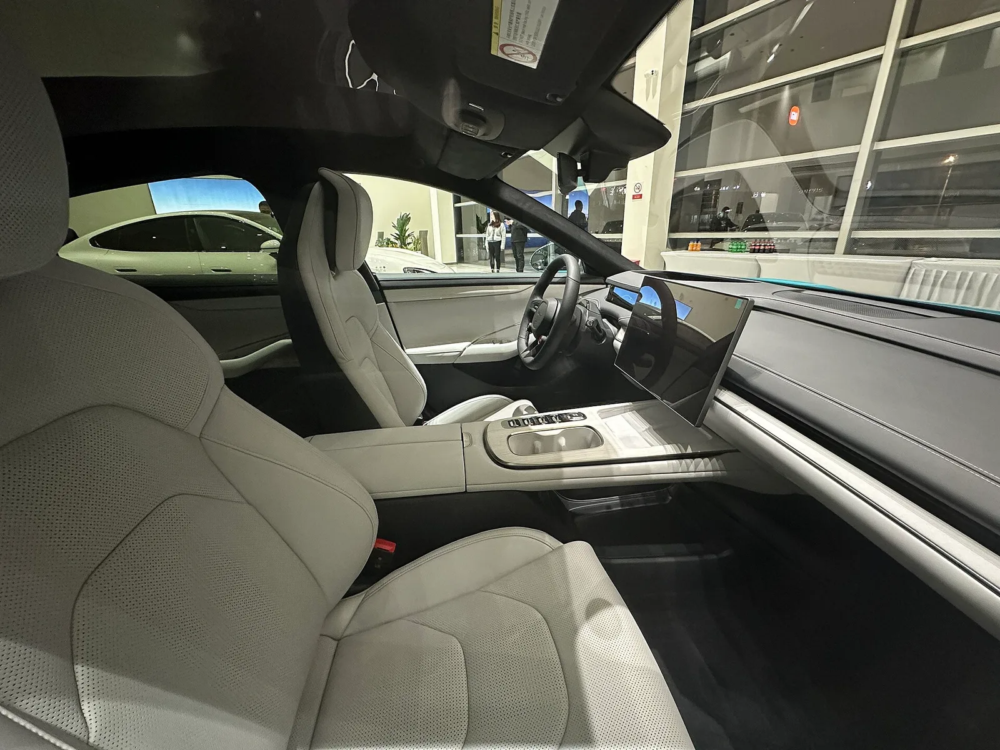

▲ SU7은 28개월 만에 누적 50만 대를 넘겼다 ⓒ Wikimedia Commons
샤오미 SU7이 누적 50만 대를 넘겼습니다. 2024년 4월 인도를 시작한 지 28개월 만입니다.
같은 시기에 다른 발표도 나왔습니다. 샤오미 전기차·AI 부문이 2분기 연속 영업적자를 기록했다는 내용입니다.
두 소식은 모순이 아닙니다. 같은 원인에서 나온 두 결과입니다.
1. 50만 대라는 기록
| SU7 누적 | 50만 대 돌파 |
|---|---|
| 소요 기간 | 2024년 4월 인도 시작 후 28개월 |
| 전 라인업 누적 | 76만 대 (SU7 울트라, YU7 포함) |
| 2026년 7월 인도 | 10만 대 이상 (누적 기준) |
휴대폰 회사가 차를 만들어 28개월 만에 50만 대를 팔았습니다. 기존 완성차 업체 기준으로도 빠른 축입니다.
2. 그런데 적자다
| 항목 | 이번 분기 | 직전 분기 | 1년 전 |
|---|---|---|---|
| 영업손익 | -26억 위안 | -31억 위안 | 흑자 |
| 부문 매출 | 249억 위안 | — | +17.1% |
| 전기차 매출 | 239억 위안 | — | +15.9% |
| 인도량 | 104,199대 | — | +28.2% |
| 매출총이익률 | 19.2% | 20.1% | 26.4% |
| 평균판매가 | 229,312위안 | -2.5% | -9.6% |
인도량은 28.2% 늘었는데 마진은 26.4%에서 19.2%로 떨어졌습니다. 7.2%p 하락입니다.
손실 폭 자체는 줄었습니다. 31억 위안에서 26억 위안으로 개선됐습니다. 다만 방향은 여전히 마이너스입니다.
3. 왜 마진이 무너지나
샤오미가 밝힌 원인은 세 가지입니다.
| 요인 | 내용 |
|---|---|
| 믹스 악화 | 고가 모델 비중이 줄었다 — ASP가 9.6% 하락한 이유 |
| 부품 원가 상승 | 대당 원가가 올라 마진을 직접 깎았다 |
| AI 사업 비용 | 같은 부문에 묶인 AI 투자비가 늘었다 |
운영비는 연간 기준 25.7% 늘어 74억 위안이 됐습니다. 매출 증가율(17.1%)보다 비용 증가율이 빠릅니다.
가장 눈여겨볼 숫자는 ASP입니다. 평균판매가가 전년 대비 9.6%, 전분기 대비 2.5% 내려갔습니다. 대당 수취 금액이 계속 낮아지는 상황에서 원가가 오르면 마진은 양쪽에서 눌립니다.

▲ SU7 후측면. 패스트백 형태의 실루엣이 특징이다
4. 진짜 경고는 44%다
보도에서 가장 무거운 숫자는 50만도 26억도 아닙니다.
SU7의 2026년 판매가 전년 대비 약 44% 감소했다는 대목입니다. 누적 50만 대는 지난 28개월 전체의 합계이고, 최근 흐름은 다른 방향입니다.
| 2026년 연간 목표 | 55만 대 |
|---|---|
| 7월까지 달성률 | 39% |
| 남은 기간 | 5개월 |
| 필요 월평균 | 월 6만 대 이상 |
7월까지 39%라면 남은 5개월에 61%를 채워야 합니다. 월 6만 대 이상이 필요한데, 최근 월간 인도량은 3만 대대입니다. 산술적으로 쉽지 않은 구조입니다.
5. 샤오미가 꺼낸 카드
| 방향 | 내용 |
|---|---|
| 유럽 진출 | 내년부터 유럽 시장 진출 계획 |
| EREV 진입 | 주행거리 연장형 전기차 세그먼트 진입 — '스카이 노마드 N90' 등 |
| 라인업 확대 | SU7 울트라, YU7으로 이미 확장 중 |
EREV는 배터리 용량을 줄이고 발전용 엔진을 얹는 구성입니다. 배터리 원가를 낮추면서 주행거리 불안은 해소합니다. 중국 시장에서 최근 빠르게 커지는 세그먼트입니다.
다만 EREV는 순수전기차보다 대당 마진이 반드시 좋다고 보기 어렵습니다. 엔진과 발전기, 연료계통이 추가로 들어가기 때문입니다. 볼륨 확보에는 유리하지만 수익성 개선 효과는 별도로 따져봐야 합니다.

▲ 샤오미는 유럽 진출과 EREV 진입을 다음 카드로 제시했다

▲ 평균판매가가 전년 대비 9.6% 내려간 것이 마진 하락의 핵심이다

▲ SU7 운전석. 스마트폰 회사가 만든 차답게 화면 중심 구성이다

▲ 고가 모델 비중이 줄어든 것이 평균판매가 하락의 주요 원인으로 지목됐다
6. 정리
샤오미 SU7이 28개월 만에 누적 50만 대를 넘었습니다. 전 라인업 기준으로는 76만 대입니다. 분기 인도량도 104,199대로 전년 대비 28.2% 증가했습니다.
그런데 같은 분기에 26억 위안의 영업손실이 났습니다. 2분기 연속 적자이며, 매출총이익률은 1년 전 26.4%에서 19.2%로 떨어졌습니다. 평균판매가는 9.6% 하락했습니다.
더 무거운 숫자는 SU7의 2026년 판매가 전년 대비 약 44% 줄었다는 점입니다. 연간 목표 55만 대 중 7월까지 39%를 채웠습니다. 샤오미는 유럽 진출과 EREV 진입을 다음 수순으로 제시했습니다.